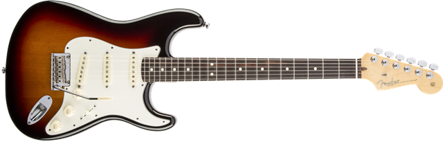

American Standard Stratocaster®
Описание товара
Гитара American Standard Stratocaster® - всё та же потрясающая модель-бестселлер, дополненная деталями из состаренного пластика и полнозвучными звукоснимателями Fender Custom Shop Fat ’50s. Новейшая итерация проверенной временем классики, впитавшая в себя всю суть Стратовского звучания, всё ещё радующая глаз, слух и чувства.
Характеристики товара
- Название модели: American Standard Stratocaster®, Maple Fingerboard, 3-Color Sunburst
- Серия: American Standard
- Цвет: 3-цветный Sunburst
- Мензура: 25.5"
- Количество струн: 6
Подробное описание товара
Корпус
Форма корпуса: Stratocaster®
Материал корпуса: Ольха
Покрытие корпуса: Уретан
Гриф
Материал грифа: Клён
Профиль грифа: Modern "C"
Мензура: 25.5" (648 мм)
Радиус накладки: 9.5" (241 мм)
Количество ладов: 22
Размер ладов: Medium Jumbo
Верхний порожек: Искусственная кость
Ширина порожка: 1.685" (42.8 мм)
Покрытие грифа: сатинирование с тыльной стороны, глянцевание с фронтальной стороны
Накладка: Клён
Маркеры лада: Черные точки
Датчики и электроника
Датчики: Custom Shop Fat '50s Single-Coil Strat
Регуляторы: Громкость, Тембр 1. (нэковый датчик), Тембр 2. (бриджевый/средний датчик)
Переключатель датчиков: Селектор 5-позиционный: Позиция 1. Бриджевый датчик, Позиция 2. Бриджевый и средний датчики,
Позиция 3. Средний датчик, Позиция 4. Средний и нэковый датчики, Позиция 5. Нэковый датчик
| Позиция переключателя |
Нэковый датчик | Средний датчик | Бриджевый датчик | Позиция регулятора тембра |
|---|---|---|---|---|
| Позиция 1 | - | - | ВКЛ | Не регулируется |
| Позиция 2 | - | ВКЛ | ВКЛ | T2 |
| Позиция 3 | - | ВКЛ | - | T2 |
| Позиция 4 | ВКЛ | ВКЛ | - | T1 и T2 |
| Позиция 5 | ВКЛ | - | - | T1 |
Схема звукоснимателей: S-S-S
Механика
Бридж: Синхронизированное двухопорное тремоло со стальными седлами
Колки: Fender Standard Cast/Sealed Staggered
Ориентация: На правую руку
Пикгард: 3-слойный пергамент
Ручки управления: Состаренный белый пластик
Разное
Струны: Fender® Super 250L, никелированная сталь, (толщина .009-.042)
Уникальные особенности: Стальные седла с удлиненными прорезями для струн, цельнометаллический бридж с высоким содержанием меди,
тонкий слой грунтовки для улучшения резонанса корпуса, тонированный гриф, детали из состаренного пластика.
Дополнительные аксессуары: Жесткий кейс